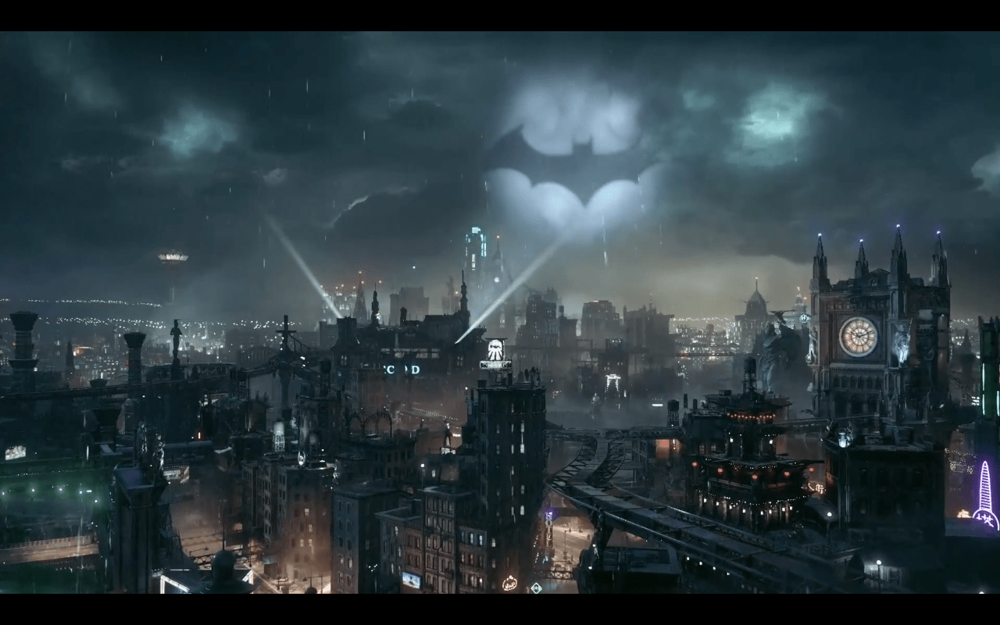
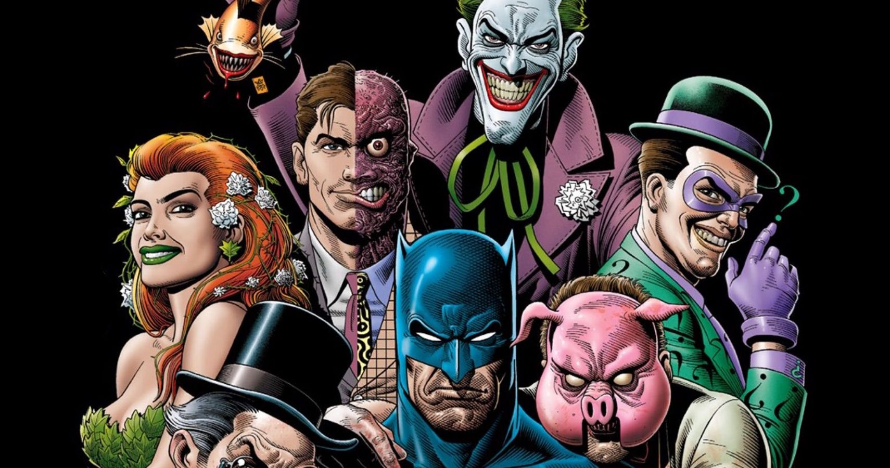

Gotham City!!
Gotham City: An Overview
A Dark and Gritty Metropolis
Gotham City is a sprawling urban landscape known for its dark, gothic architecture and pervasive atmosphere of decay and corruption. It's a place where crime and corruption run rampant, often reflecting the darker aspects of humanity. The city is a blend of old-world charm and modern chaos, with towering skyscrapers juxtaposed against crumbling buildings and shadowy alleyways.
Corruption and Crime
The city is plagued by organized crime, corruption, and political scandals. Key figures such as the corrupt police commissioner and influential crime bosses maintain a stranglehold over Gotham’s institutions. This pervasive corruption creates an environment where Batman’s vigilante justice becomes necessary, as traditional methods of law enforcement and governance often fail to address the city's deep-rooted issues.
Notable Districts and Locations
- Crime Alley: The location where Bruce Wayne’s parents were murdered, marking the birthplace of Batman’s quest for justice. It’s a symbol of the city’s ongoing struggle with crime.
- Wayne Manor: The ancestral home of the Wayne family, situated on the outskirts of Gotham. It serves as Batman's base of operations and a stark contrast to the city's grim realities.
- Arkham Asylum: A notorious mental institution for Gotham’s most dangerous criminals. It’s home to many of Batman’s most formidable foes and a symbol of the city's struggle with mental illness and criminal insanity.
- Gotham Central: The city’s main police headquarters, often depicted as being overwhelmed by the city’s crime wave. It’s a crucial part of Batman’s efforts, as he works closely with officers like Jim Gordon to tackle crime.
- The Narrows: A run-down, impoverished district that represents the lower socioeconomic strata of Gotham. It often serves as a hotspot for criminal activity and gang violence.
The City's Resilience
Despite its many problems, Gotham City is also characterized by resilience and a fighting spirit. There are moments of hope and redemption, often highlighted by the efforts of both its citizens and heroes like Batman. This resilience is an essential part of the city's character, reflecting the ongoing battle against the darkness that envelops it. In summary, Gotham City is a rich, complex environment that plays a crucial role in Batman's narrative. Its dark, corrupted nature and iconic landmarks create a compelling setting for Batman’s ongoing fight against crime and his quest for justice.